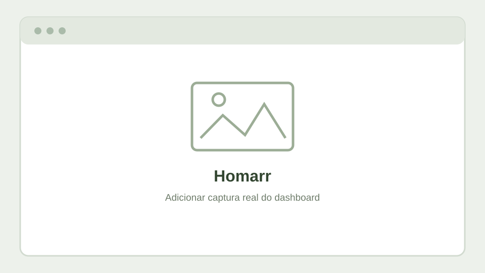

Um ponto de entrada para os serviços
O Homarr funciona como um dashboard de navegação. Em vez de memorizar vários endereços, é possível agrupar ligações aos serviços por área de utilização.

Organização sugerida
Grupos do dashboard
- Rede e segurança: firewall, DNS e equipamentos de rede.
- Virtualização e armazenamento: Proxmox e NAS.
- Automação: Home Assistant e serviços MQTT/Zigbee.
- Monitorização: estado e disponibilidade dos serviços.
Nota de segurança
As capturas públicas devem ocultar ligações administrativas completas, endereços, tokens e informações privadas. O dashboard não deve expor credenciais nem interfaces de administração na Internet.